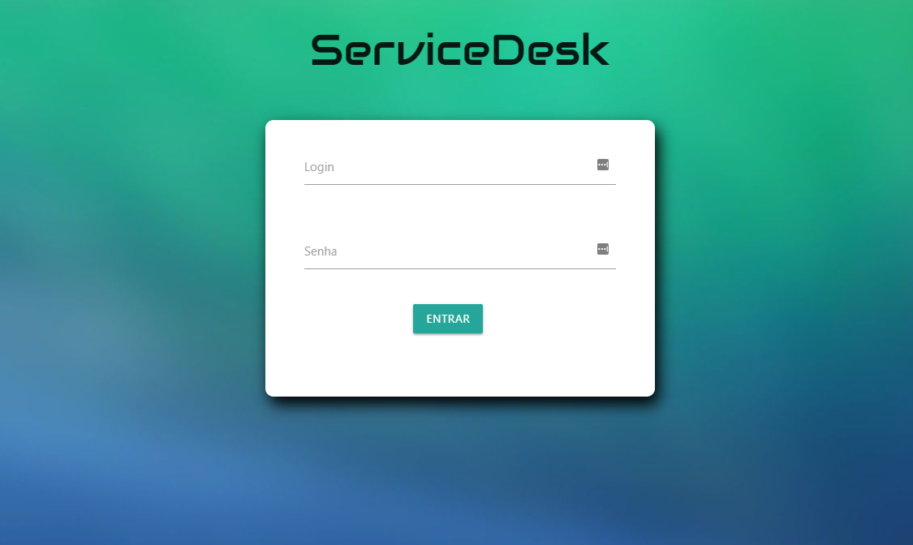

Service Desk
Bem vindo!
Esse é um projeto semestral da universade a qual estudei, Unip. Aqui, irei falar um pouco mais sobre ele.
As linguagens utilizadas, como foi desenvolvido, arquitetura etc.
Abaixo haverão alguns cards explicando cada tela, e outros com maiores informações a respeito.

Página incial de Login.
Nessa página, a rotina consulta o banco para localizar o login.
Nessa página, a rotina consulta o banco para localizar o login.

Aqui contém informações do chamado. Dependendo do usuário, as informações serão restristas, no caso, um usuário Administrador tem acesso e visão total dos menus, e chamados.
No entanto, um usuário colaborador só tem visão aos seus chamados, e o acesso a alteração de cadastro e criação de Login são restritos.

teste de imagem blbalalblablablablablalbalblablablalb lablablalbauhuhsuahsuhas
Observação
Algumas informações sobre a estrutura.
teste de imagem blbalalblablablablablalbalblablablalb lablablalbauhuhsuahsuhas